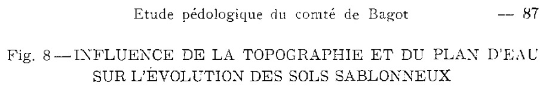
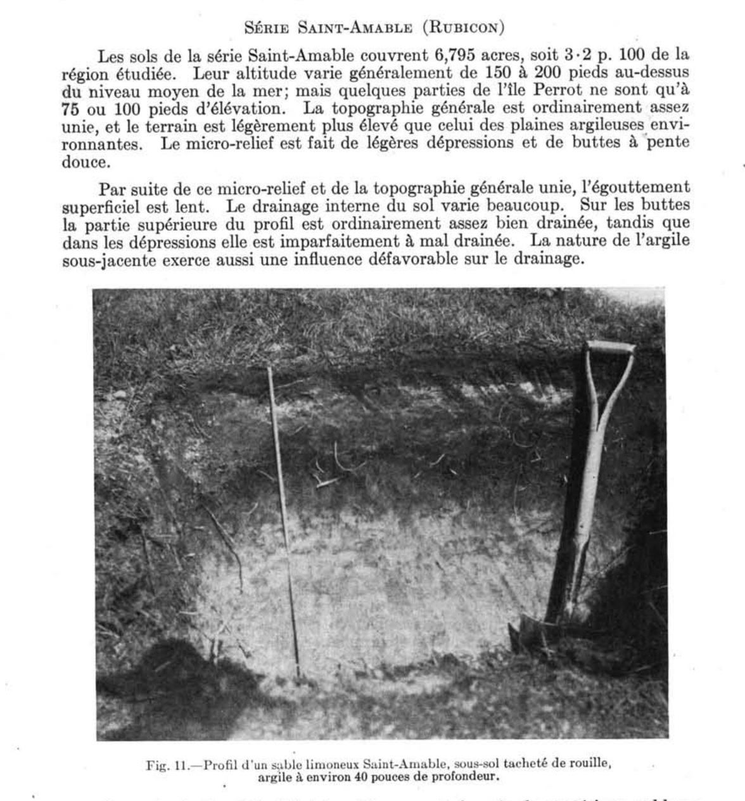
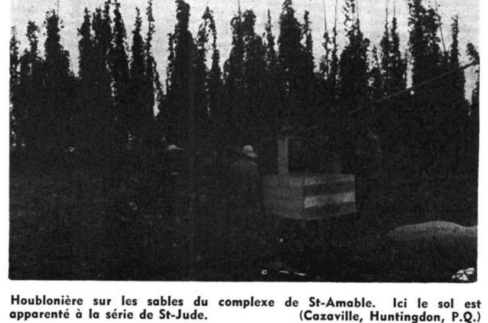
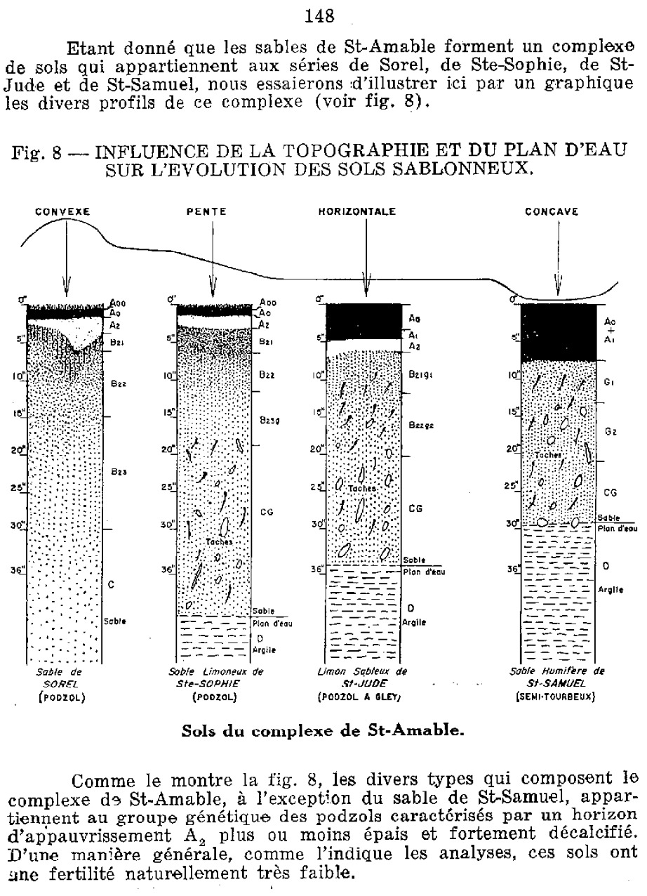
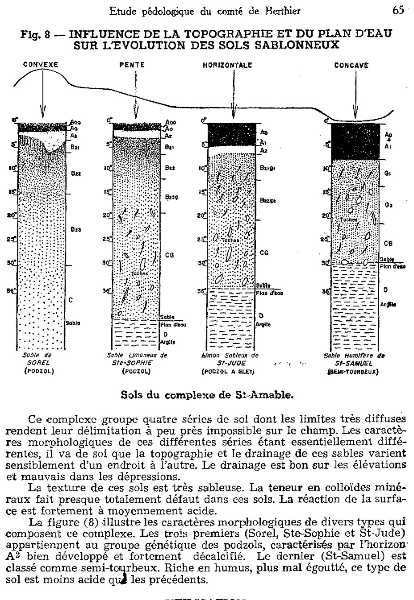

Identification & Caractéristiques Générales
Les sols de la série Saint-Amable se sont développés sur des dépôts de sables meubles, fins à moyens, d'origine deltaïque ou littoraux associés à la mer de Champlain, recouvrant un substratum argileux marin (argile grise ou bleuâtre) ou, plus rarement, un till glaciaire. L'épaisseur de cette couverture sableuse varie généralement de 0,7 à 1,8 mètre. La morphologie de surface se caractérise par une topographie de plaine unie à légèrement ondulée, présentant un micro-relief marqué alternant entre de faibles élévations (buttes ou crêtes à pente douce) et de légères dépressions, imprimant au secteur un caractère de caténa de drainage.
La texture dominante de la partie supérieure du sol est une terre franche sableuse à sable fin, exempte de pierres en surface. La dynamique hydropédologique est fortement conditionnée par ce micro-relief, la présence du substratum argileux peu perméable et la position de la nappe phréatique temporaire. Le drainage naturel varie ainsi de modérément bon sur les buttes à imparfait ou mauvais dans les dépressions et les bas de pentes, où l'égouttement est restreint par la compacité relative du matériau et la stagnation saisonnière de l'eau. Le profil pédologique présente des caractéristiques morphologiques variables selon la position topographique, allant de sols faiblement développés à des profils à gley dans les zones déprimées.
Sur le plan agronomique, les aptitudes des sols Saint-Amable dépendent étroitement de la position dans le caténa et de la maîtrise de l'eau. Les secteurs bien drainés conviennent aux grandes cultures et aux cultures fourragères, tandis que les zones mal drainées nécessitent l'installation d'un réseau de drainage souterrain pour uniformiser la portance et permettre une mise en valeur optimale. Les principales limitations incluent la faible rétention en eau et en éléments nutritifs inhérente à la texture sableuse des horizons supérieurs, ainsi que les excès hydriques temporaires liés au substrat argileux sous-jacent. La régie cultural requiert un apport régulier de matière organique, une fertilisation fractionnée pour contrer le lixiviation des nutriments, ainsi que des interventions de chaulage afin de corriger l'acidité naturelle du profil.
Classification Taxonomique & Environnement Pédologique
| Ordre Pédologique | Gleysolique |
|---|---|
| Grand Groupe (SCSS) | Gleysol humique |
| Sous-Groupe Taxonomique | Gleysol humique orthique |
| Famille Pédologique | Loameuse, mixte, neutre, douce et subaquique |
| Mode de Dépôt Parental | Dépôts alluvionnaires ou glacio-marins de la vallée du Saint-Laurent |
| Classe de Drainage Naturel | Imparfait à mauvais |
| Régime Thermique & Humidité | Mésique / Perhumide à subhumide |
Description Morphologique du Profil Type
Séquences génétiques des horizons pédologiques caractérisant le profil type représentatif de la série Saint-Amable :
Profil représentatif — Sols de l'île de Montréal
✓ Source : Sols de l'île de Montréal — Page 54Couleur Munsell : Non précisée
Structure & Consistance : Polyédrique à granulaire
Description morphologique : Sable limoneux noir brunâtre, riche en matière organique; pH 5.4 à 5.7.
Couleur Munsell : Non précisée
Structure & Consistance : Polyédrique à granulaire
Description morphologique : Sable limoneux lessivé gris clair ou gris brunâtre clair; (il reste souvent des traces de cet horizon dans les sols cultivés).
Couleur Munsell : Non précisée
Structure & Consistance : Polyédrique à granulaire
Description morphologique : Sable fin ou moyen brun rougeâtre avec taches de rouge jaunâtre; généralement friable mais occasionnellement cimenté en ortstein. (Dans les sols bien égouttés, cet horizon d'un brun rougeâtre plus uniforme alors que dans les parties mal égouttées il est d'un gris jaunâtre); pH 5.5 à 5.8.
Couleur Munsell : Non précisée
Structure & Consistance : Polyédrique à granulaire
Description morphologique : Sable brun jaunâtre clair avec tachetures très contrastantes de brun et de brun grisâtre; (gris et rouille); pH 5.3 à 6.3.
Couleur Munsell : Non précisée
Structure & Consistance : Polyédrique à granulaire
Description morphologique : Sable brun jaunâtre foncé fortement tachetés de gris et de brun rouille; on voit souvent de minces couches de sable dont la finesse des grains et les nuances de couleur varient.
Couleur Munsell : Non précisée
Structure & Consistance : Polyédrique à granulaire
Description morphologique : Sable fin gris alternant avec du sable plus foncé en couches minces qui contiennent de nombreuses particules de mica; sans structure; bien tassé ou assez ferme à certains endroits pH 5.6 à 6.9.
Couleur Munsell : Non précisée
Structure & Consistance : Polyédrique à granulaire
Description morphologique : Argile grise imperméable.
Profil naturel (vierge) — Comté de Nicolet
✓ Source : Comté de Nicolet — Page 96Couleur Munsell : Non précisée
Structure & Consistance : Polyédrique à granulaire
Description morphologique : Feuilles mortes avec un peu d'humus acide de coloration noire.
Couleur Munsell : Non précisée
Structure & Consistance : Polyédrique à granulaire
Description morphologique : Sable de teinte noire à brun foncé, fortement humifère et peu minéralisé; sans structure, consistance friable; pH 4.5-5.8.
Couleur Munsell : Non précisée
Structure & Consistance : Ni consistance
Description morphologique : Sable, gris cendré; sans structure ni consistance; épaisseur variable; descend dans l'horizon B sous forme de langues irrégulières; pH 5.0-5.8.
Couleur Munsell : Non précisée
Structure & Consistance : Polyédrique à granulaire
Description morphologique : Sable, brun rouge; sans structure, consistance friable. L'ortstein ferrugineux est presque toujours absent; pH 5.0-5.8. L'horizon B peut souvent se diviser en B 1 et B 2 .
Couleur Munsell : Non précisée
Structure & Consistance : Polyédrique à granulaire
Description morphologique : Sable micacé de teinte grise avec un peu de gley; sans structure, parfois tassé; pH 5.8-6.5.
Profil naturel (vierge) — Comté de Soulanges
✓ Source : Comté de Soulanges — Page 39Couleur Munsell : Non précisée
Structure & Consistance : Polyédrique à granulaire
Description morphologique : Humus brut, brun foncé, accompagné d'un peu de sable gris; pH 4.5.
Couleur Munsell : Non précisée
Structure & Consistance : Particulaire
Description morphologique : Terre franche sableuse légère à sable limoneux, lessivée, grise ou gris brunâtre; meuble, structure particulaire; pH 4.5.
Couleur Munsell : Non précisée
Structure & Consistance : Particulaire
Description morphologique : Sable limoneux ou sable brun rougeâtre foncé, parfois durci ou accompagné de concrétion d'ortstein, mais généralement meuble et avec structure particulaire; pH 5.0.
Couleur Munsell : Non précisée
Structure & Consistance : Particulaire parfois légèrement tacheré de gris ou de jaune orangé
Description morphologique : Sable limoneux ou sable brun pâle à jaunâtre, meuble, structure particulaire parfois légèrement tacheré de gris ou de jaune orangé; pH 5.5.
Couleur Munsell : Non précisée
Structure & Consistance : Polyédrique à granulaire
Description morphologique : Sable fin gris pâle jaunâtre contenant des particules micacées foncées; ordinairement tacheté et strié de rouille; pH 5.8.
Couleur Munsell : Non précisée
Structure & Consistance : Particulaire
Description morphologique : Sable stratifié, bien tassé mais friable structure particulaire; pH 6.3.
Couleur Munsell : Non précisée
Structure & Consistance : Polyédrique à granulaire
Description morphologique : Argile grise ou gris bleuâtre.
Profil naturel (vierge) — Comté de Yamaska
✓ Source : Comté de Yamaska — Page 78Couleur Munsell : Non précisée
Structure & Consistance : Polyédrique à granulaire
Description morphologique : Feuilles mortes avec un peu d'humus acide de coloration noire.
Couleur Munsell : Non précisée
Structure & Consistance : Polyédrique à granulaire
Description morphologique : Sable de teinte noire à brun foncé, fortement humifère et peu minéralisé; sans structure, consistance friable; pH : 4.5-5.8.
Couleur Munsell : Non précisée
Structure & Consistance : Ni consistance
Description morphologique : Sable, gris cendré; sans structure ni consistance; épaisseur variable; descend dans l'horizon B sous forme de langues irrégulières; pH : 5.5-6.0.
Couleur Munsell : Non précisée
Structure & Consistance : Polyédrique à granulaire
Description morphologique : Sable, brun rouge; sans structure, consistance friable. L'ortstein ferrugineux est presque toujours absent; pH : 5.0-6.0. L'horizon B peut souvent se diviser en B¹ et B².
Couleur Munsell : Non précisée
Structure & Consistance : Polyédrique à granulaire
Description morphologique : Sable micacé de teinte grise avec un peu de gley; sans structure, parfois tassé; pH : 5.8-6.5.
Profils Photographiques & Planches de Terrain
Documents iconographiques, figures pédologiques et coupes de terrain documentées dans les mémoires d'inventaire pour de la série Saint-Amable :








Propriétés Physico-Chimiques & Analyses de Laboratoire
Données Analytiques de Laboratoire
Aucune analyse physico-chimique quantitative de laboratoire (granulométrie par sédimentométrie, pH H₂O/CaCl₂, matière organique Walkley-Black ou bases échangeables) n'a été consignée pour cette unité dans les archives historiques numérisées ou les bases contemporaines EESSAQ/MAPAQ.
Particularités Régionales, Phases & Variantes Pédologiques
Déclinaisons régionales, faciès texturaux, phases d'érosion ou de pierrosité et variantes cartographiées par étude pour de la série Saint-Amable :
| Étude Régionale | Symbole | Appellation / Phase / Variante | Différenciation avec la série type (Analyse pédologique) |
|---|---|---|---|
| Comté de Chambly | SB3 |
Saint-Blaise loam | Modalité modale de référence (type de base de la série). |
SB3h |
Saint-Blaise loam humifère | Phase humifère enrichie en matière organique superficielle. | |
SB4 |
Saint-Blaise loam limono-argileux | Faciès argileux plus lourd et compact que le loam de référence. | |
SB4b |
Saint-Blaise loam limono-argileux 3-8 % de pente | Faciès argileux plus lourd et compact que le loam de référence. | |
SB4m |
Saint-Blaise loam limono-argileux mince | Phase mince sur substrat rocheux (< 50 cm); Faciès argileux plus lourd et compact que le loam de référence. | |
SB4p |
Saint-Blaise loam argileux pierreux | Phase pierreuse (abondance de cailloux et blocs en surface); Faciès argileux plus lourd et compact que le loam de référence. | |
SB5 |
Saint-Blaise argile limoneuse | Faciès argileux plus lourd et compact que le loam de référence. | |
SBa3 |
Saint-Blaise variante non calcaire loam | Variante décarbonatée (non calcaire) à réaction plus acide. | |
SBa4 |
Saint-Blaise variante non calcaire loam limono-argileux | Variante décarbonatée (non calcaire) à réaction plus acide; Faciès argileux plus lourd et compact que le loam de référence. | |
| Comté de Châteauguay | B |
Saint-Blaise loam argileux | Faciès argileux plus lourd et compact que le loam de référence. |
| Comté de Iberville | SB |
Saint-Blaise argileux sur till loameux fin alcalin | Phase peu profonde sur till; Faciès argileux plus lourd et compact que le loam de référence. |
| Comté de Laprairie | SB3 |
Saint-Blaise loam | Conforme à la série type de référence (caractéristiques texturales et drainage identiques). |
SB3h |
Saint-Blaise loam humifère | Phase humifère enrichie en matière organique superficielle. | |
SB3p |
Saint-Blaise loam légèrement à modérément pierreux | Phase légèrement à modérément pierreuse (obstruction mécanique modérée). | |
SB4 |
Saint-Blaise loam limono-argileux | Faciès argileux plus lourd et compact que le loam de référence. | |
SB4p |
Saint-Blaise loam argileux légèrement à modérément pierreux | Phase légèrement à modérément pierreuse (obstruction mécanique modérée); Faciès argileux plus lourd et compact que le loam de référence. | |
SB5 |
Saint-Blaise argile limoneuse | Faciès argileux plus lourd et compact que le loam de référence. | |
| Les sols de l’Île de Montréal | Bl |
Saint-Blaise loam | Conforme à la série type de référence (caractéristiques texturales et drainage identiques). |
Bl-a |
Saint-Blaise argile mince | Phase mince sur substrat rocheux (< 50 cm); Faciès argileux plus lourd et compact que le loam de référence. | |
| Comté de Napierville | SB |
Saint-Blaise | Conforme à la série type de référence (caractéristiques texturales et drainage identiques). |
SBh |
Saint-Blaise humifère | Phase humifère enrichie en matière organique superficielle. | |
| Comté de Rouville | SB3 |
Saint-Blaise loam | Conforme à la série type de référence (caractéristiques texturales et drainage identiques). |
SB4 |
Saint-Blaise loam limono-argileux | Faciès argileux plus lourd et compact que le loam de référence. | |
SB4p |
Saint-Blaise loam limono-argileux légèrement à modérément pierreux | Phase légèrement à modérément pierreuse (obstruction mécanique modérée); Faciès argileux plus lourd et compact que le loam de référence. | |
| Comté de Saint-jean | SB |
Saint-Blaise loam | Conforme à la série type de référence (caractéristiques texturales et drainage identiques). |
SBbp |
Saint-Blaise loam 3-8% de pente légèrement à modérément pierreux | Phase légèrement à modérément pierreuse (obstruction mécanique modérée). | |
| Comté de Verchères | SB4 |
Saint-Blaise loam limono-argileux | Faciès argileux plus lourd et compact que le loam de référence. |
SB5 |
Saint-Blaise argile limoneuse | Faciès argileux plus lourd et compact que le loam de référence. | |
SB5m |
Saint-Blaise argile limoneuse mince | Phase mince sur substrat rocheux (< 50 cm); Faciès argileux plus lourd et compact que le loam de référence. | |
| Comté de Drummond | Lu |
Saint-Lucien loam sableux (complexe) | Faciès textural plus filtrant (loam sableux au lieu de loam); Drainage ne s'applique pas (distinct du drainage de référence mal drainé); Classification sous-groupe : Podzol humo-ferrique gleyifié (vis-à-vis de Gleysol humique orthique). |
| Comté de Nicolet | SAI |
Série de St-Amable. | Drainage imparfait à mauvais (distinct du drainage de référence mal drainé). |
| Comté de Yamaska | SAI |
Série de St-Amable(complexe). | Drainage imparfait à mauvais (distinct du drainage de référence mal drainé). |
| Comté de Maskinongé | SAI |
Sable grossier de Saint-Amable (700 acres) | Faciès sableux très filtrant et pauvre en éléments nutritifs vis-à-vis du loam de référence; Drainage imparfait à mauvais (distinct du drainage de référence mal drainé). |
| Sols de l'île de Montréal | SAI |
SÉRIE ST-AMABLE | Drainage imparfait à mauvais (distinct du drainage de référence mal drainé). |
| Comté de Soulanges | SAI |
SÉRIE SAINT-AMABLE (RUBICON) | Drainage imparfait à mauvais (distinct du drainage de référence mal drainé). |
Distribution Pédo-Paysagère & Représentativité Cartographique (Couverture PPS 2026)
- Sheldon loam lioneux (SHD) — co-occurrente dans 3 polygone(s)
- Suffield loam (SUF) — co-occurrente dans 2 polygone(s)
Aptitudes Agronomiques, Hydropédologie & Conservation des Sols
Indicateurs Hydropédologiques & Vulnérabilité à l'Érosion (BDHP 2026)
Interprétation BDHP : Potentiel de ruissellement modérément élevé. Faible taux d'infiltration, présence d'horizons ralentissant le drainage descendant.
Classement selon l'Inventaire des Terres du Canada (ITC / CLI) : Classe 2w.
- Potentiel agricole : Terroir adapté aux cultures régionales selon la texture dominante et la régie de drainage.
- Contraintes majeures : Imparfait à mauvais. Risque d'engorgement temporaire ou d'excès d'eau printanier.
- Gestion & Aménagement : Drainage souterrain ou superficiel préconisé sur les terres planes. Chaulage et apport organique régulier selon les bilans agronomiques.
- Cultures adaptées : Grandes cultures (maïs, soya, céréales), prairies fourragères et cultures maraîchères selon le contexte géomorphologique.